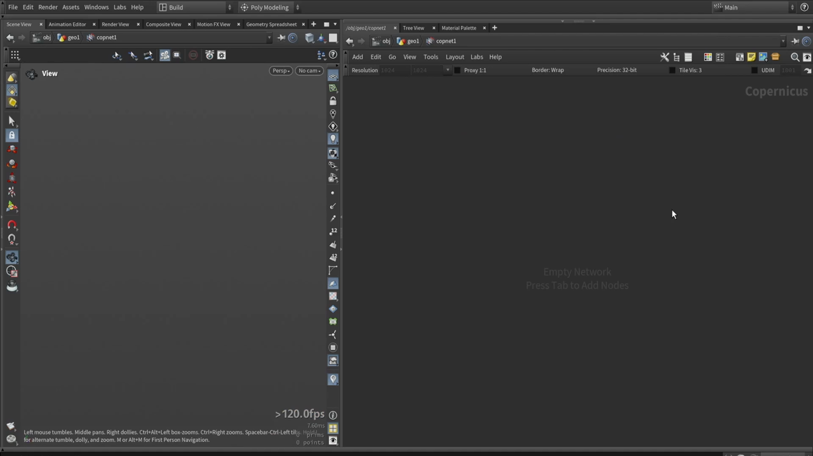
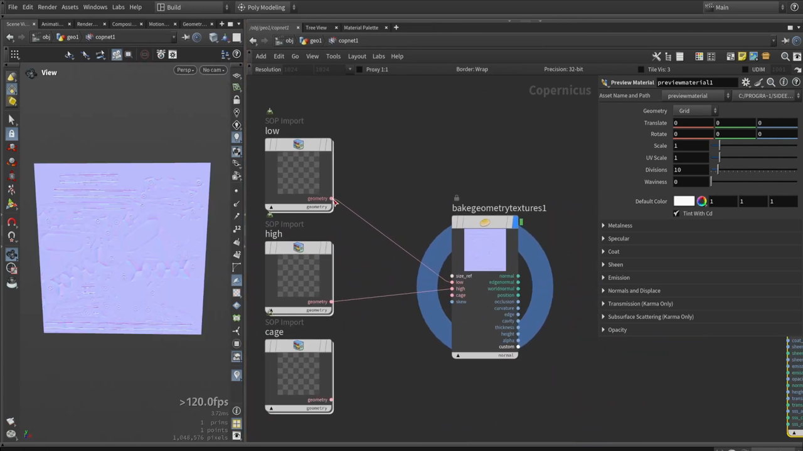

Houdini で斧を作る 6 — Copernicus でテクスチャリングを始める
出典: Axe Texturing: full breakdown of COPs texturing in Houdini （Simon Houdini さん / 2025-09-15 / 1:04:35 / 英語）の 0:00〜7:18 部分。 このページは、上記の動画を見ながら自分用にまとめた日本語の学習メモです。作者公式の翻訳ではありません。 モデリング編はこちらから始まります。
このシリーズについて
モデリング編で作った斧に、 Houdini の中だけでテクスチャを付けていくチュートリアルです。 Houdini 21 のリリースを受けて作られたもので、1時間5分・21チャプターあります。
以前と比べて、Houdini の中でテクスチャリングをかなりの部分までやれるという 自信が持てるようになりました。それをここでやってみたい、というのが動画の趣旨です。
1. モデルを用意する
斧のファイルが無くても試せるように、2つの方法が紹介されていました。
方法1: Test Geometry を使う
Test Geometryの Shader Ball を置きますUV Layoutをかけて、これをローポリとします- 元のモデルはサブディビジョンで作られているので、
Subdivideをかけてハイポリとします
方法2: 実際のファイルを読み込む
片方しか無い場合の対処も示されていました。
| 手元にあるもの | 作り方 |
|---|---|
| ハイポリだけ | PolyReduce でローポリを作る |
| ローポリだけ | ボクセル化してからスムージングをかける。90度の硬いエッジが少し丸くなります |
色で部位を識別できるようにしておく
モデリング編の最後と同じ考え方です。 モデルの各部位に色を付けておくと、後のテクスチャリングで狙い撃ちできます。
モデルのすべての部位はそれぞれ違うマテリアルになります。 なので、この色分け（ID）のやり方をおすすめします。 Substance でも同じことができて、マテリアルの選択とマスク作りがとても簡単になります。
色は Color ノードで付けます。Cd としてポイントのデータに入ります。
グループを作って部位ごとに違う色を割り当てておきます。
Null を置いておく
ローポリとハイポリそれぞれに Null ノードを置き、
これを Copernicus 側から参照します。
Null にしておくとあとから間に何かを挟めます。 UV を作り直したり、法線を直したり、データを足したり。 思ったとおりのデータになっていなければ、間に差し込めます。
2. Copernicus ネットワークを作る

Copernicus Network を置いてダブルクリックすると、
テクスチャリング用のノードを置ける階層に入ります。
上部のツールバーに主要な設定が並んでいます。
| 項目 | 初期値 |
|---|---|
| Resolution | 1024 × 1024 |
| Proxy | 1:1 |
| Border | Wrap |
| Precision | 32-bit |
| Tile Vis | 3 |
| UDIM | 1001 |
3. Baker のセットアップ

ネットワークの中で bake と入力すると候補が出ます。
ベイクノード単体とセットアップのどちらも選べますが、
セットアップを選ぶと必要なノードが一式ついてきます。
上の画像がその結果です。SOP Import が3つ
（low / high / cage）用意され、
Bake Geometry Textures に繋がっています。
あとはアイコンからメッシュのパスを指定するだけです。 low には先ほどのローポリの Null、high にはハイポリの Null を選んで Accept します。
ベイクできるマップ
ノードの出力を見ると、焼けるものが一望できます。
| 入力 | 出力 |
|---|---|
size_ref / low / high / cage / skew |
normal / edgenormal / worldnormal / position /
occlusion / curvature / edge / cavity /
thickness / height / alpha / custom |
この時点でノーマルマップが焼かれ、それらしい見た目になります。
解像度は上げられますが、まずは低い解像度で作業することをおすすめします。 先にいくつか組み立ててから上げればいいためです。
4. Material Previewer で3Dの見た目を確認する
2Dのマップだけ見ていても、モデル上でどう見えるかは分かりません。
そこで Material Previewer を使います。
- ジオメトリとマテリアルを繋ぎます。まずはジオメトリだけで構いません
- 焼いたノーマルマップを繋ぎます
- 解像度を上げると、より正確に見えます
結果が更新されないときは、ノードを2回クリックしてみてください。 データがキャッシュされていることがあるためです。
上の画像の右側が Preview Material のパラメータで、
Metalness / Specular / Coat / Sheen / Emission / Normals and Displace /
Transmission / Subsurface Scattering / Opacity といった項目が並んでいます。
Tint With Cd にチェックが入っているのが、先ほどの色分けを活かす設定です。
Karma でのレンダリングなども使えますが、個人的には 速いビューポートで作業を進められることを優先しています。 完全に正確である必要はなく、速く作業できることのほうが大事です。
この記事のまとめ
- 斧が無くても
Test Geometryの Shader Ball で試せます - ハイポリだけなら
PolyReduce、ローポリだけならボクセル化してスムージング - 部位ごとに
Cdで色を付けておくと、後のマスク作りが一気に楽になります - low / high は
Nullにしておくと、あとから間に処理を挟めます Copernicus Networkの初期値は 1024 × 1024 / 32-bit / UDIM 1001bakeと打ってセットアップを選べば、low / high / cage のSOP Importが一式付いてきますBake Geometry Texturesは normal / occlusion / curvature / cavity / thickness など12種類を出力できます- 作業中は解像度を低めに。更新されないときはノードを2回クリックします
次はワークライトを設定して、ケージを使ったベイクを詰めていきます。